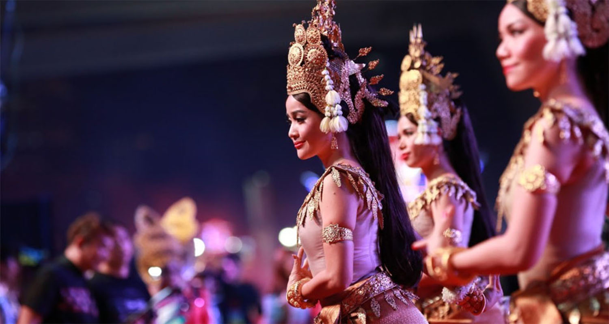
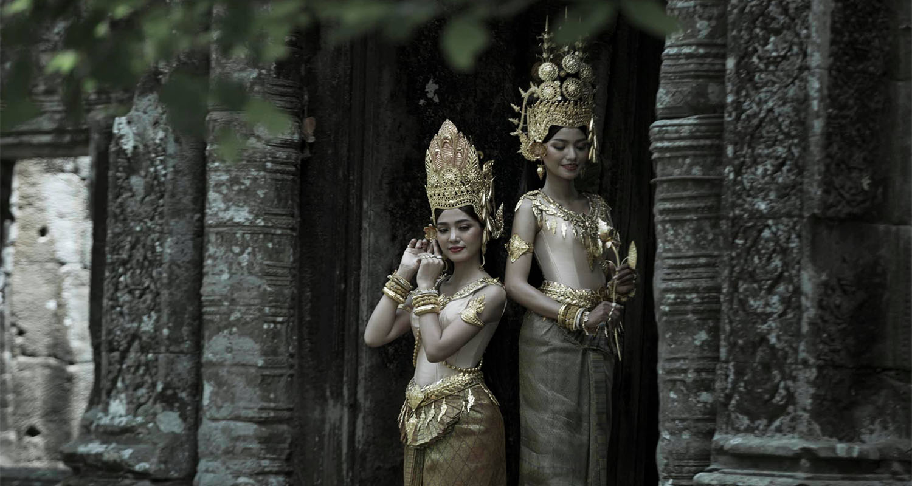

សិល្បៈរបាំខ្មែរ
ABOUT KHMER DANCE
របាំក៏ដូចជាតន្ត្រីនិង ល្ខោន ចម្រៀង កំណាព្យ ចម្លាក់ និង ទម្រង់សិល្បៈដទៃទៀតទាំងអស់ដែល គឺសុទ្ធតែជាតម្រូវការរបស់ជីវិតខ្មែរទាំងអស់ ។ ដោយហេតុហ្នឹងហើយ ទើបខ្មែរមានទម្លាប់ប្រើពាក្យថា ៖ ជីវិតគឺសិល្បៈ ហើយសិល្បៈគឺជីវិត នេះឯង ។ ខ្មែរត្រូវការរបស់ដើម្បីរាំថ្វាយអារក្សអ្នកតា...


